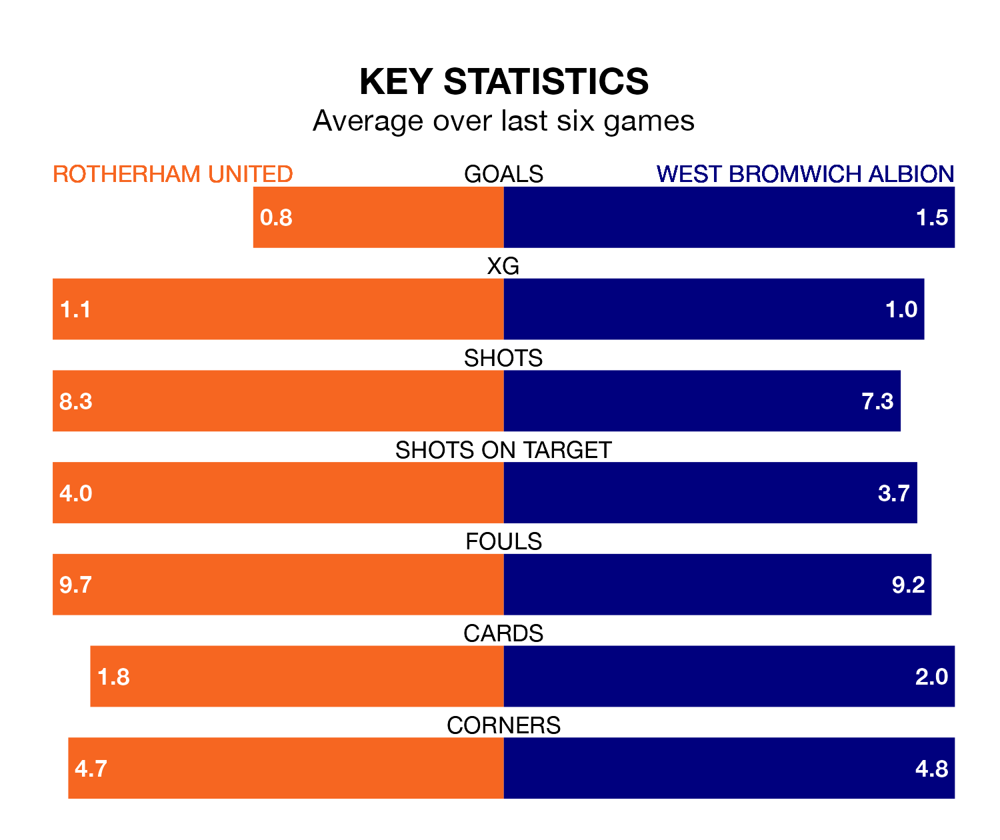

West Bromwich Albion are strong favourites to take all three points despite Rotherham United's home advantage in Tuesday's late match at the AESSEAL New York Stadium.
*Betting Company* are offering odds of 1.77 on West Bromwich sealing the win, with the visitors sitting fifth in the Championship table.
Rotherham, who are 24th in the league and 19 points behind the Baggies, are priced at 5 to win. A draw is set at 3.45.
In Alex Palmer, West Bromwich can rely on one of the league's safest pair of hands. He has kept nine clean sheets in his 20 appearances this season, and no 'keeper has prevented the opposition scoring more often in the Championship.
In Rotherham's net, Viktor Johansson has two clean sheets in 20 games. He has conceded a goal every 53 minutes, 80% more often than the 95 minutes between goals for Palmer.
With 18 goals in 20 games so far this season, United are the league's second-lowest scorers with 0.9 goals per game. And they are conceding more than average, letting in 39 goals at a rate of 2.0 per game.
Albion, meanwhile, are above average scorers, with 1.6 goals per game, compared to a league average of 1.4. They have conceded 1.0 goal per game.
The Millers are in bad form in the Championship, with no wins and three draws from their last six games.
With three wins and three losses over that period, the Baggies' form is much better – they have taken nine points from 18, compared to the hosts' three.
Over the last two years, Rotherham and West Bromwich have played each other twice. They won one each.
Their last meeting was on April 7, when Rotherham won 3-1 at home.
Rotherham's last match was on Saturday, a 2-1 loss against Swansea City, with Sam Nombe getting the goal for the Millers.
West Bromwich lost 2-1 against Sunderland last time out, also on Saturday, with Brandon Thomas-Asante on the scoresheet.
